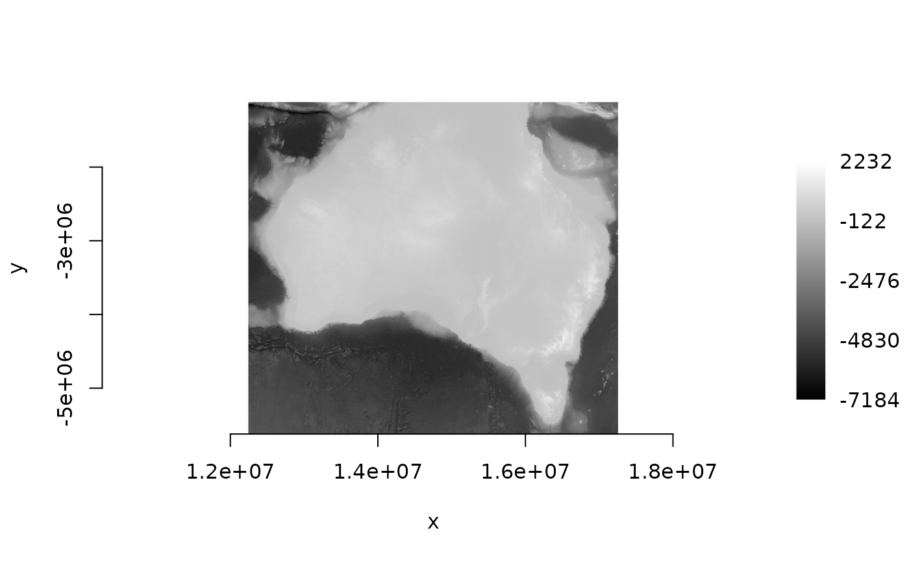

Remote sources: storage, authentication and windows
Source:vignettes/articles/remote-sources.Rmd
remote-sources.Rmdcptkirk reads Cloud-Optimised GeoTIFFs straight from cloud object stores — S3, Google Cloud Storage, Azure, plain HTTP(S), or local disk. This article covers the three things people ask first: how a source is addressed, how it authenticates, and how to pull pixels (a window, or a whole reprojected AOI) into R.
We use three public datasets, chosen to span the awkward cases:
| Dataset | Access | CRS | Type |
|---|---|---|---|
| Alpha Earth Foundations embeddings | plain https:// (no auth) |
UTM 36S | Int8, 64 bands |
| Sentinel-2 L2A (AWS Open Data) |
s3:// (anonymous + region) |
UTM | Byte / UInt16, one COG per band |
| GEBCO 2024 bathymetry | plain https:// (no auth) |
EPSG:4326 | Int16, global |
A source is a single URL
Where libraries like obstore / async-tiff
separate a store (bucket, region, credentials) from a
path (the object key), cptkirk takes one self-contained URL and
works out the rest. The scheme (and, for AWS, the host) selects the
backend; the rest is the object key.
aef <- paste0(
"https://data.source.coop/tge-labs/aef/v1/annual/2021/36S/",
"xekh5rjs4wg6wb9b4-0000000000-0000000000.tiff"
)
cog_info(aef)
#> ── cog_info ────────────────────────────────────────────────────────────────────
#> <https://data.source.coop/tge-labs/aef/v1/annual/2021/36S/xekh5rjs4wg6wb9b4-0000000000-0000000000.tiff>
#> size: 8192 x 8192 px (67.1 Mpx)
#> bands: 64 Int8
#> resolution: 10 (CRS units)
#> crs: EPSG:32736
#> nodata: -128
#> overviews: 13 (8192x8192, 4096x4096, 2048x2048, 1024x1024, 512x512, 256x256,
#> 128x128, 64x64, 32x32, 16x16, 8x8, 4x4, 2x2, 1x1)
#> band names: "A00", "A01", "A02", "A03", "A04", "A05", …, "A62", and "A63"cog_info() reads only the header and IFDs — no pixels —
so it is a cheap way to understand a file before fetching anything.
Authentication comes from the environment
cptkirk never takes credentials as arguments; it reads the standard
environment variables that object_store documents, so
secrets stay out of your scripts. Mapping from the obstore
store object:
obstore |
cptkirk |
|---|---|
S3Store("bucket", region = "us-west-2", skip_signature = True) |
Sys.setenv(AWS_REGION = "us-west-2", AWS_SKIP_SIGNATURE = "true") |
path = "key/within/bucket" |
fold into the URL: s3://bucket/key/within/bucket
|
GeoTIFF.open(path, store = store) |
cog_info(url) / ck_read(url) /
ck_warp(url, dst)
|
Two situations:
-
Plain
https://on a non-AWS host (the AEF tile above, GEBCO below) uses the HTTP backend and needs nothing. -
AWS-hosted data — whether you write
s3://…orhttps://….amazonaws.com/…— routes to the S3 backend, which signs requests. For a public bucket, switch signing off and set the region:
Sys.setenv(AWS_REGION = "us-west-2", AWS_SKIP_SIGNATURE = "true")
scene <- paste0(
"s3://sentinel-cogs/sentinel-s2-l2a-cogs/12/S/UF/2022/6/",
"S2B_12SUF_20220609_0_L2A/"
)
cog_info(paste0(scene, "TCI.tif"))
#> ── cog_info ────────────────────────────────────────────────────────────────────
#> <s3://sentinel-cogs/sentinel-s2-l2a-cogs/12/S/UF/2022/6/S2B_12SUF_20220609_0_L2A/TCI.tif>
#> size: 10980 x 10980 px (120.6 Mpx)
#> bands: 3 Byte
#> resolution: 10 (CRS units)
#> crs: EPSG:32612
#> nodata: 0
#> overviews: 4 (10980x10980, 5490x5490, 2745x2745, 1373x1373, 687x687)
#> band names: "band_01", "band_02", and "band_03"The selection is by host, not scheme: a
*.amazonaws.com URL is treated as S3 even over
https, so it still needs AWS_SKIP_SIGNATURE
here. Use "true" / "false" for that variable
(object_store parses booleans that way — GDAL’s
YES/NO is not understood at this layer).
Reading a window into R
ck_read() is ck_warp() that returns a
base-R array instead of writing a file. With no t_srs or
tr it reads the native window directly (no GDAL); the
returned matrix/array carries geotransform,
crs and nodata attributes, so it is
self-describing.
If you think in source pixel offsets (like
async-tiff’s Window(col_off, row_off, width, height)),
convert them to a target extent with the geotransform and hand that to
ck_read():
gt <- cog_info(paste0(scene, "B04.tif"))$geotransform
col_off <- 4096L; row_off <- 2048L; width <- 512L; height <- 512L
te <- c(gt[1] + col_off * gt[2], # xmin
gt[4] + (row_off + height) * gt[6], # ymin (gt[6] is negative)
gt[1] + (col_off + width) * gt[2], # xmax
gt[4] + row_off * gt[6]) # ymax
a <- ck_read(paste0(scene, "B04.tif"), te = te) # native window, no reprojection
dim(a)
#> [1] 512 512
str(attributes(a))
#> List of 4
#> $ dim : int [1:2] 512 512
#> $ geotransform: num [1:6] 340960 10 0 4079560 0 ...
#> $ crs : chr "EPSG:32612"
#> $ nodata : num 0The array maps onto async-tiff’s RasterArray: the values
are data, dim(a) is shape,
attr(a, "geotransform") is transform,
attr(a, "crs") is crs, and
attr(a, "nodata") stands in for mask (derive
one with a == attr(a, "nodata")).
Building a stack from per-band COGs
Sentinel-2 L2A stores one COG per band, at each
band’s native resolution (10 m for the visible/NIR bands, 20 m for the
SWIR bands). To assemble an analysis-ready stack you read each band onto
the same grid. Because ck_read() aligns output to
the tr grid by default, bands fetched with the same
te/tr come back co-registered — even when
their native resolutions differ, GDAL resamples each onto the common
grid:
te20 <- c(gt[1] + 4096 * gt[2], gt[4] - (4096 + 512) * abs(gt[6]),
gt[1] + (4096 + 512) * gt[2], gt[4] - 4096 * abs(gt[6]))
bands <- c(B08 = "B08.tif", B04 = "B04.tif", B11 = "B11.tif") # 10 m, 10 m, 20 m
layers <- lapply(bands, function(b) {
ck_read(paste0(scene, b), te = te20, tr = c(20, 20), r = "bilinear")
})
vapply(layers, dim, integer(2)) # identical dims -> co-registered
#> B08 B04 B11
#> [1,] 256 256 256
#> [2,] 256 256 256
stack <- array(0, dim = c(dim(layers[[1]]), length(layers)))
for (k in seq_along(layers)) stack[, , k] <- layers[[k]]
dim(stack)
#> [1] 256 256 3(cptkirk’s multi-source form,
ck_warp(src = c(tile_a, tile_b), …), is a spatial
mosaic of the same data across adjacent tiles — not a band stack, so
combining separate band files is a “read each, bind” as above.)
Reprojecting on the way out
The same call warps as it reads. GEBCO is global and in EPSG:4326; here we pull a region of it reprojected to Web Mercator and resampled to 2 km, fetching only the overview and window that target needs:
gebco <- "https://projects.pawsey.org.au/idea-gebco-tif/GEBCO_2024.tif"
out <- ck_warp(
gebco, tempfile(fileext = ".tif"),
t_srs = "EPSG:3857",
te = c(110, -45, 155, -10), # Australia, in EPSG:4326 ...
te_srs = "EPSG:4326", # ... so name the extent's CRS
tr = c(2000, 2000),
r = "average"
)
#> ! GDAL WARNING 1: Clamping output bounds to (-20037508.342789,-20037508.342789) -> (20037508.342789, 20037508.342789)
ds <- new(gdalraster::GDALRaster, out)
gdalraster::plot_raster(ds, legend = TRUE)
ds$close()The remote read fetched only the tiles covering that extent, at the overview matching 2 km, then handed the reprojection and resampling to GDAL.